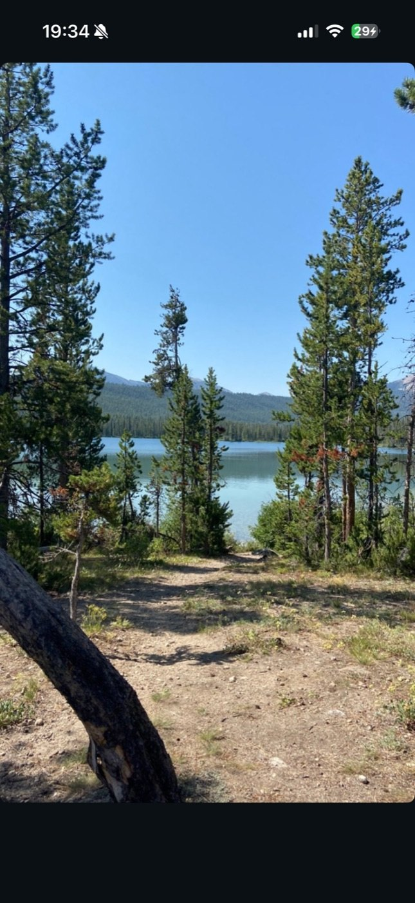
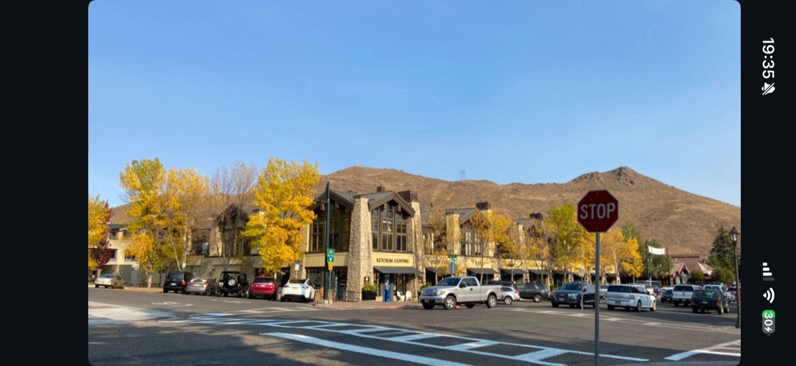
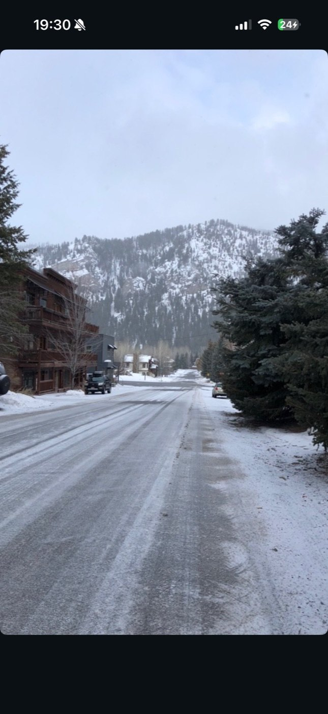
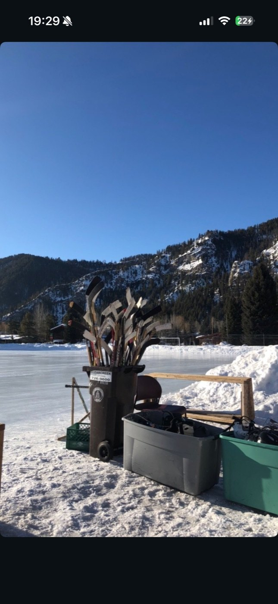
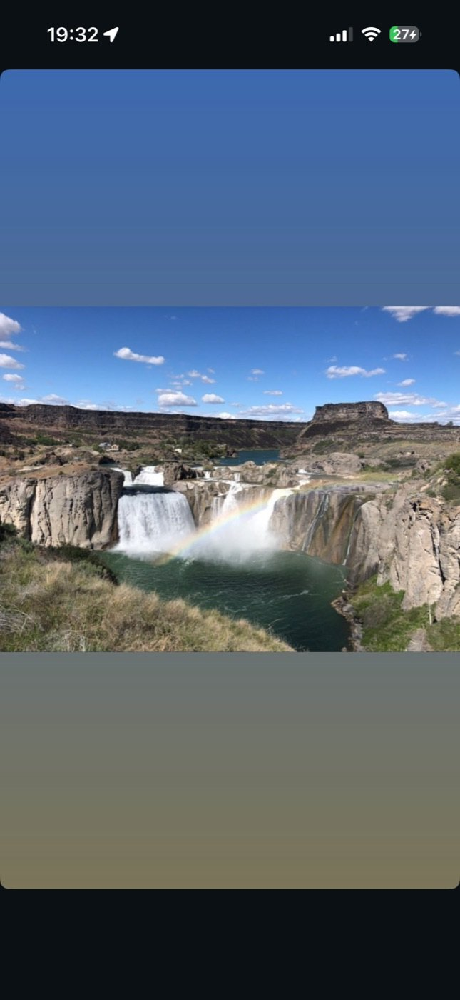
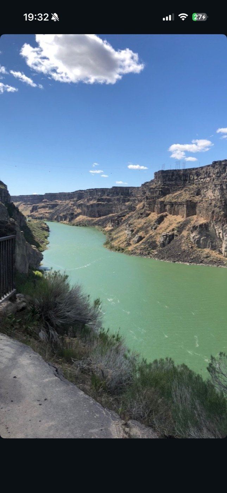
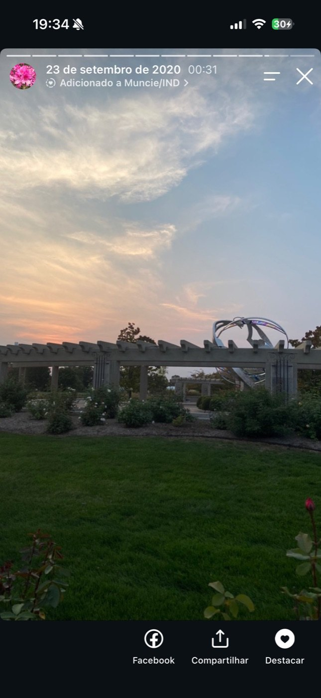
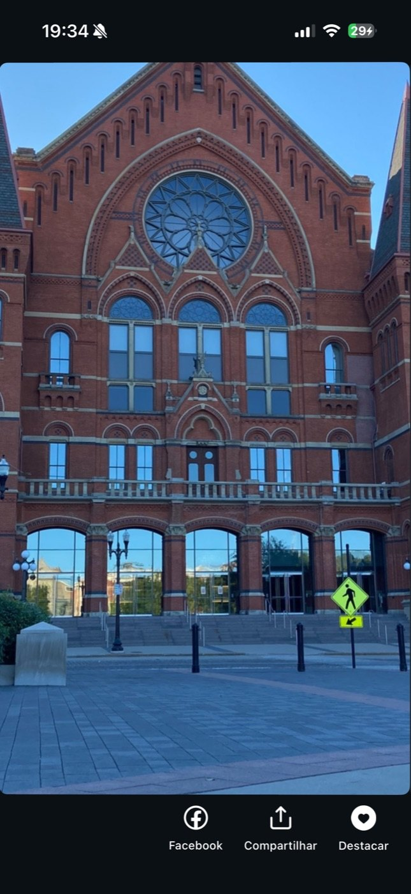
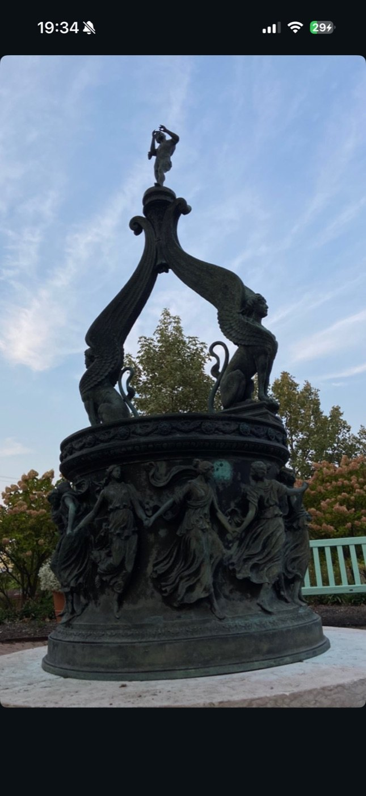

Being an au pair and traveling shaped a lot of who I am. Here's a bit of that journey.
From growing up in Brazil and exploring neighboring Uruguay to living for 9 months in the mountains of Idaho, USA and visiting Budapest, Hungary, each place left its mark on how I see the world.
Click a destination below or drag the globe to spin to the countries marked with a heart:
I spent 9 months as an au pair in Ketchum, Idaho (USA), a formative chapter that taught me independence, adaptability, and how much there is to learn from living inside a different culture. Nearby Sun Valley became one of my favorite places in the world.
"Happiness is only real when shared."
"However difficult life may seem, there is always something that you can do and succeed at." Stephen Hawking
"No matter how you feel, don't keep your feelings to yourself. Share them with someone you love." Todd Parr
From home to across the world, a few of the places that stayed with me, with Sun Valley at the top of the list.








